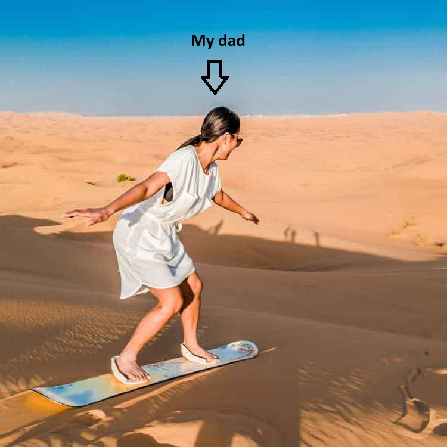
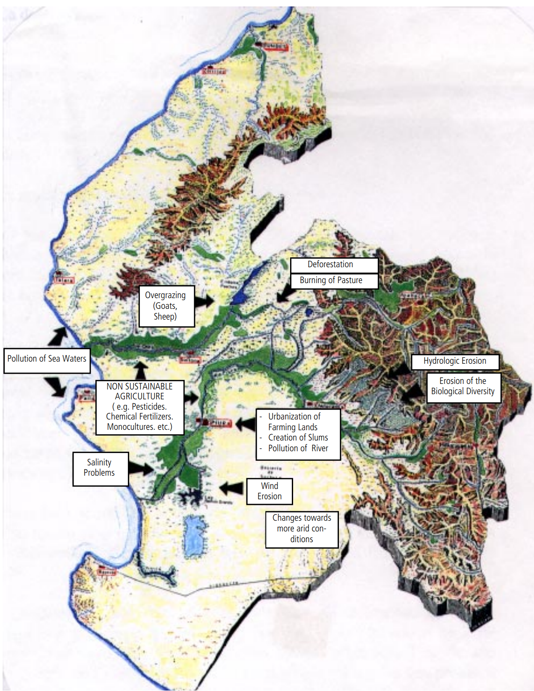
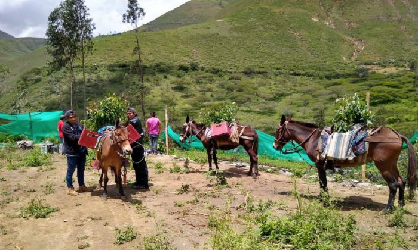
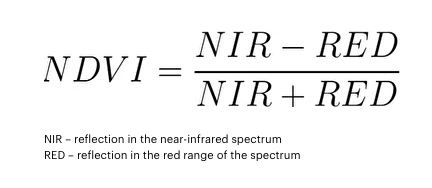

This weeek I returned to my hometown of Doncaster. Me and my father don’t speak much other than him asking me if I had watched the football. Although since watching society of the snow and him being Latin American I just had to pester him about what the news was like at the time of the crash. After a few mumbles of nothing he said that he didnt really remember the news but one of his favourite holidays as a child was when he went to Peru and surfed the sand dunes. I cant imagine my dad ever doing something that sounds fun - hes a golfer, but I did research into it and it sounds great. However, what is not so fortunate for the populations around these areas is the risk of desertification, which introduces this weeks diary entry on policy.
Piura is located in the northwestern part of Peru. It is one of the most diverse areas in the country. It consits of coastal to high mountains. This gives it a very unique landscape with many exotic and unique species. The areas also is very arid in some areas. Although the landscape in Piura is beautiful, the area has been experiencing desertifcation and risks losing its unique ecosystem, making the temperature even more arid and ultimately the loss of population due to the livelihoods being impacted. The region is also known to suffer from water scarcity and the el nino phenomenon an irregular occurrence of drought which further exemplifies desertification risk.

To fight against this the national action plan for the fight against desertification (PAN Peru) was established. This sets objectives in sustainable land management for the region. Here is a short summary of the key objectives:
- Sustainable Land Management: Promoting practices that help maintain the health of the land, improve agricultural productivity, and support biodiversity conservation.
- Water Resource Management: Being wary of water usage and improving access to water for arid environments.
- Ecosystem Restoration: Implementing reforestation projects as well as rehabilitating degraded lands to increase ecological strength.
- Climate Change Adaptation: Strategies to help communities and adapting to the impacts of climate change.
- Participation: Engaging local communities in the planning and implementation of projects
- Policy Integration and Governance: Ensuring that other policies have strong and thorough research into integrating desertification and land degradation. An example of this is the Peru’s National Forest Conservation Program for Climate Change Mitigation (PNCB) a key policy for sustainable management and combating desertification.
Below are some initiatives taken to combat this in the Piura Region
- Dry Forest of the Northern Coast of Peru project:
Addressing challenges such as deforestation and climate change. Impacts are to emphasise conservation of endangered species and promotion of land use practices. They use research, monitoring community engagement and capacity building. to enhance understanding and stewardship of the ecosystems and provide ways in which local communities can not damage any further.
- Reforest’Action:
Tree planting of 500,000 trees across Huarmaca and Pacaipampa districts since January 2020. Includes local community engagement and educating on sustainable agricultural; practices Restore forest cover, combat soil erosion, and rejuvenate degraded lands
- Cutivalú radio station: Radio station that discusses current issues within the region. Keeps people informed about environmental issues concerning Piura
One of the key issues highlighted by Guevara (2015) is the need to take account for the vegetation and harvesting of in the area. A proposal towards this is that the area should ‘create special types of stockbreeding, agriculture and forest industries which would adapt to the characteristics of arid zones and promote those species which have already become adapted to aridity’. Though there have been improvements in the areas, especially attempting to change the culture of recycling and water usage, as well as initiatives. Yet, there are still few data sources on the results.

What is apparent in the policy making is the monitoring of species and effects of desertification and topics that may lead to such. Though, with many individual initiatives by NGO’s the national & local government, some of this information could be falsified, forgotten or not interpretable together with other results. An example of this is given within the sahel region and their attempts to handle the great green wall initiative.
NDVI for vegetation monitoring
A way to witness the effects of these projects is by vegetation monitoring with NDVI. Simply put, As healthy vegetation absorbs most of the visible light and reflects a significant portion of the near-infrared (NIR) light.

With the use of remote sesnors that provide many datasets to monitor vegetation, this offers:
- Consistency and Comparability: providing a time-series, standardised way to compare vegetation health.
- Accessibility: Monitoring will be vast and able to access inaccessible areas.
- Temporal Analysis: Enables the analysis of vegetation dynamics, seasonal changes, and long-term trends (counting for the el nino phenomenon).
With this knowledge an application could be built to measure the successes of the implementations of sustainable management and initiatives with the use of Landsat imagery and NDVI analysis to track the vegetation changes. An example using this for desertification is the Sahel region of Africa. Where Landsat imagery has been used to monitor vegetation changes over time. This involved using Normalized Difference Vegetation Index (NDVI) analyses to assess vegetation health and coverage, identifying areas of degradation and improvement. There have been similar cases within this
Although this sounds like a great solution to me. I recognise the stagnentness of governments to approve such remote sensing applications to the forefront of policy in monitoring sustainable environments. Need is publicised by the likes of Setta (2023) towards the effectiveness of this, yet, requires ongoing analysis and complex model creation and tweaking that may be considered as over-capacity and even distract from the root issue instead of aiding (Dubovik et al, 2021).
Reflection
This entry allowed me to foresee the potential challenges and just how hard it may be to centre remote sensing around policy decisions. First all of, the data must be explicitly ready for analysis and be understood by the policy makers. With complex methodologies this is a challenge to do. As well as this, the model must be changed and involve many different factors, you cant just say x is cause y or that y is bad because x is showing this if a factor is missing. Another issue I think is relevant especially in cities and cultures such as Piura is if the remote sensing technique would actually help at all. It is known that one of the main reasons for desertification risk in the region is bad agricultural practices, remote sensing cannot stop this, just monitor the effects of change that governments implement. Instead, I see remote sensing being used in tandem with policy to assess the effectiveness of efforts.
~~ I may have to sand surf in Piura now ~~